Coworking é o espaço compartilhado por diversos profissionais e empresas, os quais alugam os ambientes por um dia ou por pacote mensal e utilizam os espaços colaborativamente.
Dentro de um ambiente corporativo, o design de interiores desempenha um papel fundamental na criação de espaços funcionais, esteticamente agradáveis e adaptados às necessidades específicas da organização, contribuindo para a eficiência operacional, a satisfação dos funcionários e a expressão da identidade corporativa. Aqui, você verá mais sobre esse assunto, desde os diferentes tipos de ambientes corporativos até suas características, especificidades, localidades, áreas, seus setores e formatos.
Clique ou toque para visualizar o conteúdo.
Em resumo, o projeto de design de interiores para ambientes corporativos assume um papel fundamental para nutrir uma cultura organizacional vibrante e impulsionar a eficiência laboral. Cada formato, seja ele voltado para a individualidade, a versatilidade, a colaboração, seja uma combinação disso, apresenta benefícios específicos que atendem a diversas demandas e modos de operação.
Além disso, à medida que as organizações buscam se adaptar às constantes mudanças no cenário profissional, a flexibilidade torna-se um elemento essencial para a construção de espaços que fomentem a produtividade, a inovação e a satisfação dos colaboradores. Entender a dinâmica única de cada equipe e incorporar elementos que incentivem tanto a autonomia quanto a colaboração é crucial para criar ambientes corporativos nos quais a diversidade de talentos possa florescer e os objetivos organizacionais sejam alcançados com resiliência e agilidade.
Coworking é o espaço compartilhado por diversos profissionais e empresas, os quais alugam os ambientes por um dia ou por pacote mensal e utilizam os espaços colaborativamente.
A expressão “meio corporativo” refere-se ao ambiente ou ao contexto que envolve as atividades, as relações e as operações de uma corporação ou empresa. O meio corporativo engloba a atmosfera empresarial na qual as organizações operam, incluindo fatores como cultura empresarial, políticas internas, estrutura organizacional, comunicação interna e externa, além das interações entre os diversos colaboradores.
No âmbito mais amplo, o termo “corporativo” refere-se ao conjunto de práticas, estratégias e elementos relacionados à gestão e ao funcionamento de uma corporação. Isso abrange desde as políticas de governança corporativa até as estratégias de negócios, passando pela cultura organizacional, ética empresarial e responsabilidade social. Em suma, o meio corporativo é o cenário no qual as organizações conduzem suas atividades, enquanto o termo “corporativo" engloba os aspectos mais amplos e abstratos relacionados à gestão e ao funcionamento dessas entidades. Nesse contexto, é possível identificar quatro tipos de corporações:
As corporações do tipo associação compreendem duas ou mais pessoas, que podem ser físicas ou jurídicas, ou seja, as associações podem ser de indivíduos ou de empresas. Em uma associação, todas as partes têm um objetivo comum: todos devem contribuir para o patrimônio da empresa e todos têm direito a voto em todas as escolhas da empresa.
A associação pode ser uma parceria estratégica entre empresas, uma coalizão para promover interesses compartilhados ou até mesmo uma aliança comercial. Essas corporações têm estruturas organizacionais e regras definidas para coordenar esforços. Os membros trabalham em conjunto para atingir metas empresariais, compartilhando recursos e conhecimentos. Por exemplo, em uma associação comercial, diferentes empresas podem se unir para promover seus produtos em conjunto, beneficiando-se mutuamente. É como formar uma equipe empresarial para alcançar metas que seriam mais desafiadoras de serem atingidas individualmente.
Um exemplo desse tipo de corporação bem próximo dos designers de interiores é a ABD – Associação Brasileira de Designers de Interiores.
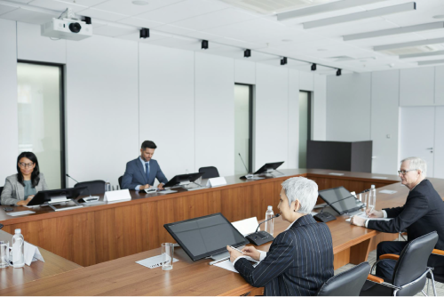
Reunião de uma associação
Fonte: Pexels (c2024)
Sala de reuniões com paredes e forro brancos, com uma ampla mesa de reuniões em formato de um retângulo fechado com espaço central vazado, com diversas cadeiras e quatro pessoas participando da reunião.
Uma corporação do tipo sociedade no meio empresarial é uma forma legal de organização em que duas ou mais pessoas se unem para conduzir um negócio comum. Essas pessoas podem ser os proprietários, chamados de sócios, e compartilham responsabilidades, recursos e lucros da empresa. Em uma sociedade, os sócios trabalham em conjunto para alcançar objetivos comerciais, contribuindo com capital, habilidades ou outros recursos necessários para o sucesso da empresa. É como criar uma equipe empresarial, em que a cooperação entre os sócios é essencial para o crescimento e a prosperidade da organização.
De acordo com o artigo 981 do Código Civil, “Celebram contrato de sociedade as pessoas que reciprocamente se obrigam a contribuir com bens ou serviços, para o exercício de atividade econômica e a partilha, entre si, dos resultados. Parágrafo único. A atividade pode restringir-se à realização de um ou mais negócios determinados” (Brasil, 2002).
Existem diferentes tipos de sociedades, como sociedade comum, limitada, anônima, em conta de participação, coligada, entre outras, cada uma com as próprias características legais, dispostas no Código Civil (Lei nº 10.406/2002).
No contexto social, uma “agremiação” refere-se a uma organização ou um grupo formado por pessoas que compartilham interesses, objetivos ou atividades comuns. Geralmente, as agremiações são associações sem fins lucrativos que buscam promover a cooperação e a participação em áreas como esportes, cultura, lazer ou causas sociais.
Exemplos comuns de agremiações incluem clubes esportivos, sociedades culturais, grupos de voluntariado e associações recreativas. Essas organizações existem para reunir pessoas com interesses similares, proporcionar um espaço para interação e colaboração e, muitas vezes, realizar atividades ou eventos relacionados aos objetivos compartilhados.
Observe o espaço cultural Semeando Axé, localizado em Duque de Caxias, no Rio de Janeiro. A edificação foi projetada pelo escritório Tadu Arquitetura e promove cultura e inclusão para crianças, jovens e adultos da região. Todos os ambientes têm aplicações de estratégias de sustentabilidade. Vale a pena conhecer o projeto.
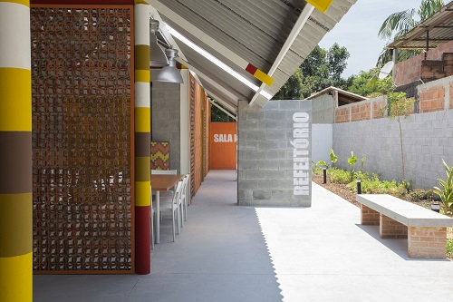
Espaço cultural Semeando Axé
Fonte: ArchDaily (2022a)
Espaço cultural feito em galpão aberto feito em paredes de bloco de concreto e telhado de duas águas em zinco, com estrutura de telhado aparente pintada de branco. A circulação entre os ambientes é aberta para o pátio externo, com paredes em cobogós de tonalidade terrosa. As colunas são circulares e pintadas em tons de vermelho, amarelo, branco e ocre, com as cores divididas em listras horizontais. O pátio possui bancos feitos com pés em tijolo maciço e banco em concreto moldado. Ao lado do muro do terreno, do lado direito da imagem, tem um canteiro com plantas. O piso é em cimento.
Diferentemente das corporações empresariais, as agremiações não visam ao lucro e geralmente são orientadas para a promoção do bem-estar social, cultural ou recreativo de seus membros. Elas são movidas pela cooperação e participação ativa de seus membros em vez de buscar ganhos financeiros.
No contexto empresarial, o termo “instituição” pode ser usado para descrever uma corporação ou organização que tem um propósito específico e serve a determinados objetivos sociais, educacionais, culturais ou filantrópicos. Essas instituições podem assumir várias formas legais, como fundações, organizações sem fins lucrativos ou até mesmo empresas com um foco claro em responsabilidade social.
Uma instituição, nesse sentido, pode ser dedicada a causas como educação, saúde, pesquisa, cultura, caridade, entre outras. O termo destaca a natureza mais ampla e muitas vezes pública da missão da organização, indo além dos objetivos puramente comerciais.
Um excelente exemplo de uma edificação para esse tipo de corporação é o Instituto Senai de Inovação em Biotecnologia, projeto desenvolvido pelo escritório de arquitetura Oliveira Cotta Arquitetura, na cidade de São Paulo. A edificação abriga laboratórios, salas de aula, refeitório, biblioteca, espaços de convívio e uma incubadora de empresas, além de ter espaços de convívio. Toda a construção é sustentável e visa garantir conforto térmico, acústico e lumínico aos ocupantes.
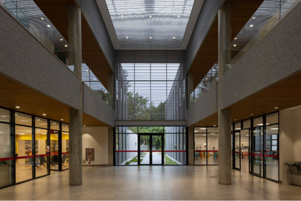
Instituto Senai de Inovação em Biotecnologia
Fonte: Finotti apud ArchDaily (2018b)
Circulação ampla, de pé direito duplo com vão aberto ao segundo pavimento com iluminação zenital. O andar térreo tem duas colunas cilíndricas que transpassam os dois andares. O piso é em porcelanato acetinado cinza. O andar superior tem parapeito de alvenaria em fulge e acabamento de vidro em cima. Acima da porta de entrada, que é de vidro e está centralizada na imagem, tem um grande plano de vidro, com brise horizontal na fachada, para controle da radiação.
Por exemplo, uma instituição educacional pode ser uma universidade sem fins lucrativos, enquanto uma instituição de caridade pode ser uma organização voltada para a assistência social. O importante é que essas entidades têm um propósito mais amplo do que simplesmente buscar lucro, visando impactar positivamente a sociedade ou uma comunidade específica.
O design de interiores desempenha um papel fundamental na criação de ambientes corporativos que são funcionais, esteticamente agradáveis e que refletem a identidade da empresa. Essas decisões não apenas influenciam a eficiência operacional, mas também afetam o bem-estar e a produtividade dos colaboradores.
Confira agora algumas características importantes a serem consideradas no design de interiores de ambientes corporativos.
Refere-se à eficiência do espaço para atender às atividades diárias. Isso envolve a disposição estratégica de móveis, equipamentos e áreas de trabalho, para otimizar a fluidez das operações realizadas no espaço.
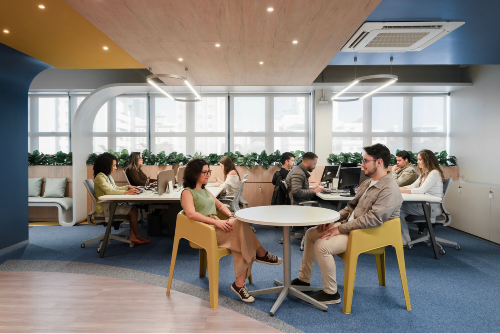
Câmara de Dirigentes Lojistas
Fonte: Estúdio NY18 apud ArchDaily (2023b)
A imagem mostra um ambiente de trabalho com o teto trabalhado nas cores azul e amarelo, rebaixo em marcenaria com iluminação, duas mesas de trabalho ao fundo, cada uma com seis estações de trabalho, quase todas sendo utilizadas, e uma mesa redonda à frente, com dois lugares, sendo utilizada por duas pessoas conversando.

Abrange desde a escolha de cadeiras e mesas até a disposição desses elementos no espaço. Móveis ergonomicamente projetados garantem conforto e saúde a longo prazo para os colaboradores, minimizando dores e lesões.
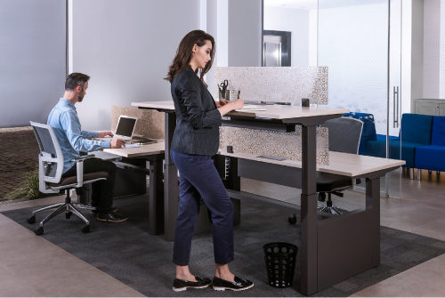
Mobiliário ergonômico para escritórios
Fonte: Marelli (s. d.)
A imagem mostra duas mesas de trabalho ergonômicas, com ajuste de altura. À esquerda, um homem trabalha, sentado em uma cadeira de escritório ergonômica e com ajuste de assento, suporte lombar e apoio de braços. À direita, uma mulher trabalha em pé.
Desempenha um papel crucial na criação de um ambiente produtivo. A luz natural deve ser maximizada sempre que possível, e a iluminação artificial deve ser ajustável para atender às diversas atividades realizadas no escritório.
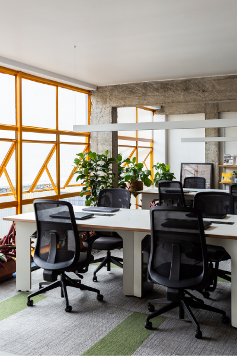
Escritório Cobogó Relações Públicas
Fonte: Gollino apud ArchDaily (2022b)
A imagem mostra um espaço de trabalho bem iluminado, com luz natural, com mesas ao lado de amplas janelas, e com luminárias lineares focadas sobre cada mesa de trabalho.
Devem ser estrategicamente escolhidos e alinhados à identidade da empresa. Cores vibrantes podem ser incorporadas em áreas de colaboração para estimular a criatividade. Já tons neutros em espaços de concentração transmitem seriedade.
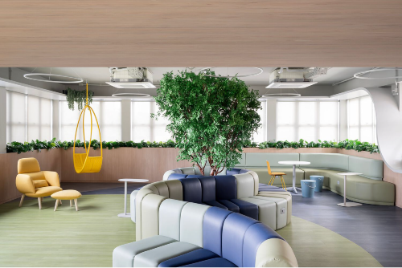
Câmara de Dirigentes Lojistas
Fonte: Estúdio NY18 apud ArchDaily (2023b)
A imagem mostra um espaço de descompressão em ambiente corporativo, com um sofá modular em formato de “S” ao centro, nas cores azul, cinza e verde. À esquerda, uma poltrona com pufe na cor amarela e um balanço na cor amarela. À direita e ao fundo, um banco em “S” nas cores verde e azul-claro, com uma mesa redonda, uma cadeira amarela e dois pufes azuis.
Ambientes corporativos dinâmicos requerem flexibilidade. Móveis modulares, divisórias móveis e espaços que podem ser reconfigurados facilitam adaptar mudanças em equipes ou demandas do negócio.

Ambiente corporativo dinâmico
Fonte: Machado apud ArchDaily (2016a)
A imagem mostra um espaço corporativo com algumas estações de trabalho em grandes mesas e outras estações de trabalho dentro de módulos de contêineres reciclados, evidenciando a possibilidade de adaptação do espaço.
Espaços dedicados à colaboração, como salas de reunião informais, lounges e áreas de brainstorming, incentivam a interação e o compartilhamento de ideias, contribuindo para uma cultura colaborativa.
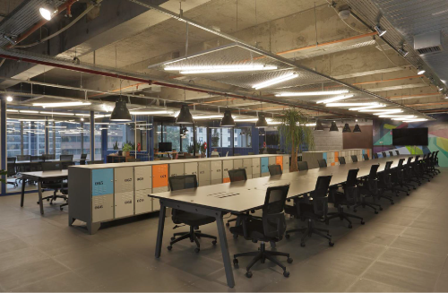
Espaço de trabalho colaborativo
Fonte: Machado apud ArchDaily (2016a)
A imagem mostra um espaço de trabalho colaborativo com duas grandes mesas com várias estações de trabalho. Entre essas duas mesas há um grande armário, com várias portas em cores diversas.

Áreas privativas, como salas de reunião fechadas ou cabines individuais, proporcionam espaços onde os colaboradores podem se concentrar em tarefas específicas ou realizar reuniões confidenciais, garantindo a privacidade quando necessária.
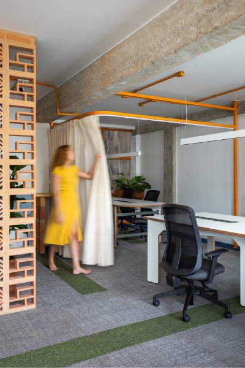
Escritório Cobogó Relações Públicas
Fonte: Gollino apud ArchDaily (2022b)
Escritório com paredes brancas, laje aparente pintada de branco e vigas e colunas aparentes em concreto. A tubulação de elétrica também é visível, pintada na cor amarelo-ouro. O escritório tem duas mesas com tampos e pés brancos, posicionadas de forma linear, porém com espaço para circulação em torno das mesas. Para dividir os espaços e manter a privacidade entre as mesas, foi instalada uma cortina em um varão pintado no mesmo amarelo-ouro da instalação elétrica. A cortina é de um tecido mais pesado na cor bege. Na imagem, uma mulher branca, de cabelo ruivo e vestido amarelo, fecha a cortina, criando a privacidade em uma mesa de trabalho. O escritório ainda tem uma parede divisória em cobogó e piso em carpete modular nas cores cinza-médio e verde-musgo.
A tecnologia integrada é fundamental para facilitar as atividades cotidianas. Isso inclui soluções de cabeamento eficientes, dispositivos de videoconferência e outras ferramentas que tornam o ambiente tecnologicamente avançado.
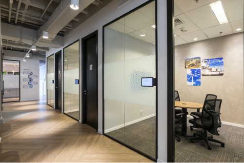
Tecnologia integrada
Fonte: T2 Arquitetura (c2014)
A imagem mostra um corredor com algumas salas de trabalho, contendo tablets para automação e abertura de cada uma delas.
Elementos artísticos, quadros, plantas e outros elementos decorativos contribuem para a estética do espaço, tornando-o mais agradável visualmente e inspirando a criatividade dos colaboradores.
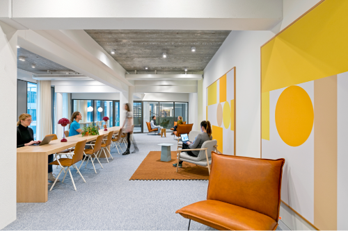
Espaço de trabalho decorado
Fonte: Sanidad apud ArchDaily (2017)
A imagem mostra um espaço de trabalho decorado, com grandes quadros abstratos à direita, em tons de amarelo, contrastando com o ambiente neutro.
A incorporação de práticas sustentáveis no design, como o uso de materiais recicláveis e sistemas de iluminação eficientes e a promoção de práticas eco-friendly, alinha o espaço corporativo com as preocupações ambientais contemporâneas.
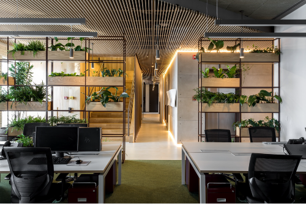
Espaço corporativo com elementos naturais
Fonte: Parente apud ArchDaily (2018d)
A imagem mostra um espaço de trabalho corporativo com duas grandes mesas e elementos naturais e verdes, com a presença de vasos e plantas.
Soluções para controle do ruído, como painéis acústicos, tapetes e divisórias adequadas, são essenciais para criar um ambiente de trabalho tranquilo e minimizar distrações sonoras.
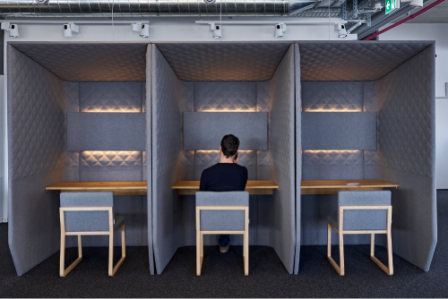
Ambiente corporativo com isolamento acústico
Fonte: Stepien apud ArchDaily (2016b)
A imagem mostra três cabines para trabalho em um ambiente corporativo, com a parte de trás aberta e todas as demais faces revestidas com isolamento acústico.
Áreas de relaxamento, cantos de leitura, espaços verdes e até mesmo salas de meditação contribuem para o bem-estar dos colaboradores, promovendo uma pausa revigorante durante o expediente.
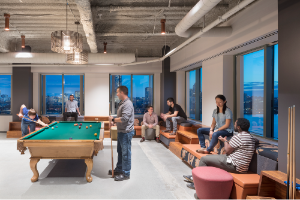
Espaço de descanso em ambiente corporativo
Fonte: Horner apud ArchDaily (2018c)
A imagem mostra um espaço de descanso em um ambiente corporativo com uma mesa de sinuca ao centro e sofás e pufes ao redor, em tons de laranja e rosa, com pessoas conversando.
Incorporar elementos visuais que representam a identidade da empresa, como cores corporativas, logotipos e elementos de design exclusivos, reforça a cultura organizacional e cria um ambiente que reflete a personalidade da empresa.
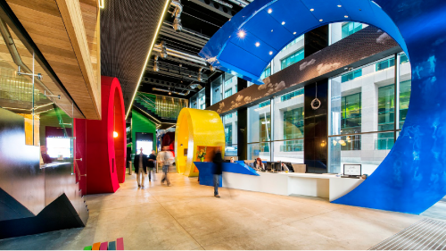
Campus do Google em Dublin
Fonte: Wurmli apud ArchDaily (2011)
A imagem mostra uma recepção de ambiente corporativo da Google, contendo elementos que mostram a identidade da marca de forma artística.
Os ambientes corporativos não se limitam a um único padrão, mas, sim, adaptam-se a uma ampla variedade de localidades, refletindo a diversidade de organizações e suas necessidades específicas. A escolha do local impacta diretamente a atmosfera do espaço de trabalho e a interação entre colaboradores. Confira a seguir as diferentes localidades comumente encontradas para ambientes corporativos.
Clique ou toque para visualizar o conteúdo.
As salas comerciais oferecem uma solução versátil para empresas de todos os tamanhos. Podem variar desde pequenos escritórios independentes até andares inteiros em edifícios comerciais. Essas salas proporcionam privacidade, controle sobre o ambiente e flexibilidade no design interior.
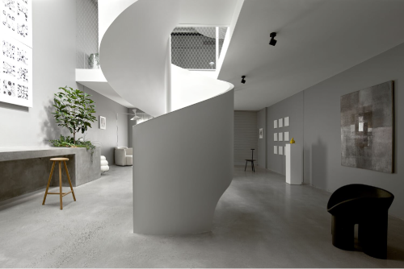
Sala comercial
Fonte: Beazley apud ArchDaily (2023a)
A imagem mostra uma sala comercial com dois andares, em tons claros, com uma escada helicoidal ao centro e decoração minimalista.
Edifícios corporativos são ícones urbanos que abrigam uma variedade de empresas em um único local. Esses espaços frequentemente oferecem vantagens como segurança e serviços compartilhados (como recepção e estacionamento), além de proporcionarem uma identidade corporativa forte pela presença em locais estratégicos.
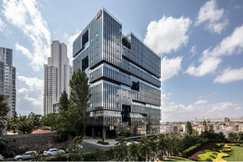
Edifício corporativo
Fonte: Dorter apud ArchDaily (2018a)
A imagem mostra um edifício corporativo moderno, com linhas retas e fachada espelhada.
Galerias empresariais são espaços amplos destinados a acomodar várias empresas sob um mesmo teto. Esses espaços promovem uma sensação de comunidade e podem incluir áreas comuns, como salas de reunião compartilhadas e espaços de convivência, fomentando a interação entre diferentes organizações.
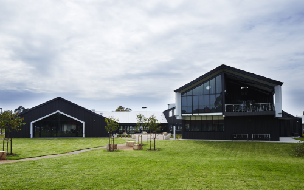
Galeria
Fonte: Taylor apud ArchDaily (2016c)
A imagem mostra uma galeria comercial, toda térrea, com planta baixa em formato de “U”, acabamento em metal preto e vidro.
Condomínios comerciais proporcionam uma abordagem única, combinando espaços de trabalho com outras instalações, como lojas, restaurantes e serviços. Esse modelo cria um ambiente em que o trabalho está integrado ao contexto mais amplo de um empreendimento, oferecendo conveniência aos colaboradores.
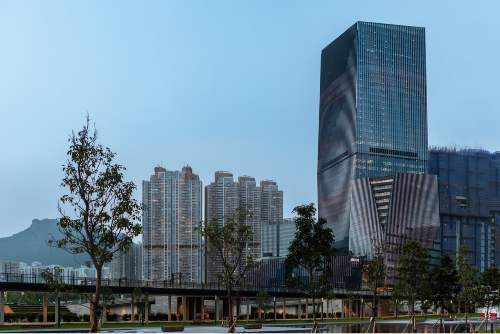
Condomínio
Fonte: Mak apud ArchDaily (2023c)
A imagem mostra um complexo com cinco edifícios, sendo um mais alto ao centro, dois de altura mediana ao lado desse edifício mais alto e dois edifícios baixos à frente do edifício alto. Todos com linhas retas e modernas e fachada em vidro espelhado.
A escolha da localidade para um ambiente corporativo não apenas determina o ambiente físico, mas também impacta a dinâmica do trabalho e a impressão que a empresa transmite. Edifícios no centro da cidade podem refletir uma imagem corporativa sofisticada, enquanto espaços em áreas mais descontraídas podem promover uma cultura mais criativa e relaxada.
Cada localidade oferece oportunidades únicas de design e organização do espaço. Salas comerciais podem favorecer ambientes mais privados, enquanto edifícios corporativos podem incentivar a colaboração em grande escala. Galerias empresariais e condomínios comerciais proporcionam uma mistura de ambientes, incentivando a diversidade e a troca de ideias entre diferentes empresas.
A flexibilidade é fundamental na escolha da localidade. As necessidades das empresas mudam com o tempo, e a capacidade de se adaptar a diferentes localidades ou reconfigurar espaços internos pode ser crucial para a longevidade e a eficácia do ambiente corporativo.
O design de interiores em um ambiente corporativo envolve a divisão do espaço em setores ou áreas específicas, cada uma com funções distintas. Cada setor é cuidadosamente planejado para atender às necessidades operacionais, promover a eficiência e refletir a identidade específica da empresa. A seguir, explore os diferentes setores comumente encontrados em um projeto de design de interiores corporativo.
Clique ou toque nas setas para visualizar o conteúdo.

Recepção
Fonte: Machado apud ArchDaily (2016a)
A imagem mostra uma recepção com um balcão em blocos estruturais de concreto, com um sofá com capitonê em couro preto à frente e teto composto de dezenas de pendentes.
Recepção e áreas de espera: são espaços que buscam causar uma primeira impressão positiva e profissional, por meio de um design que integra elementos como balcões de atendimento, assentos confortáveis e decoração representativa da marca.
Espaço de trabalho individual
Fonte: Estúdio NY18 apud ArchDaily (2023b)
A imagem mostra uma célula com um escritório individual, podendo ser totalmente fechado com porta em vidro. A célula tem formato com cantos curvos e cor amarela.
Espaços de trabalho individual: são projetados para proporcionar privacidade e concentração. O design inclui a disposição de mesas, estações de trabalho, cadeiras ergonômicas e soluções de isolamento acústico.
Espaço de trabalho colaborativo
Fonte: Parente apud ArchDaily (2018d)
A imagem mostra um ambiente de trabalho colaborativo com estações de trabalho em ilha à direita e estações em linha à esquerda. Ao fundo há uma divisória vazada com nichos com plantas.
Espaços de trabalho colaborativo: englobam áreas destinadas à colaboração entre a equipe. O design visa criar ambientes flexíveis com mesas compartilhadas, áreas de brainstorming e tecnologias de comunicação que incentivem trocar ideias.
Espaço de reuniões
Fonte: Machado apud ArchDaily (2016a)
A imagem mostra um espaço para reuniões executado em um contêiner de navegação pintado em azul e modificado para ter as laterais em vidro. Dentro da sala, há uma mesa redonda com cadeiras ao redor.
Espaços de reuniões: salas de reuniões formais fazem parte deste setor. O design visa criar ambientes apropriados para discussões e tomadas de decisão, com leiaute funcional, mobiliário adequado e tecnologia de apresentação integrada.
Setor executivo
Fonte: Parente apud ArchDaily (2018d)
A imagem mostra uma sala de trabalho com uma mesa e, atrás desta, uma cadeira do presidente. À frente da cadeira, três poltronas para reuniões. À esquerda, uma poltrona e um pufe.
Setor executivo: composto de espaços destinados a liderança e cargos executivos. O design busca transmitir uma imagem de sofisticação e autoridade, com uso de móveis de alta qualidade, iluminação estratégica e decoração representativa.
Espaço de bem-estar
Fonte: Stepien apud ArchDaily (2016b)
A imagem mostra um espaço de bem-estar, com amplas janelas mostrando natureza, uma mesa de pebolim ao centro, com duas mulheres jogando, bancos com futons e pufes na cor verde.
Áreas de bem-estar e descanso: salas de descanso, espaços de meditação e áreas de alimentação, por exemplo, são projetados para promover o relaxamento. O design inclui elementos confortáveis, iluminação suave e decoração convidativa.
Recepção
Fonte: Machado apud ArchDaily (2016a)
A imagem mostra uma recepção com um balcão em blocos estruturais de concreto, com um sofá com capitonê em couro preto à frente e teto composto de dezenas de pendentes.
Recepção e áreas de espera: são espaços que buscam causar uma primeira impressão positiva e profissional, por meio de um design que integra elementos como balcões de atendimento, assentos confortáveis e decoração representativa da marca.
Espaço de trabalho individual
Fonte: Estúdio NY18 apud ArchDaily (2023b)
A imagem mostra uma célula com um escritório individual, podendo ser totalmente fechado com porta em vidro. A célula tem formato com cantos curvos e cor amarela.
Espaços de trabalho individual: são projetados para proporcionar privacidade e concentração. O design inclui a disposição de mesas, estações de trabalho, cadeiras ergonômicas e soluções de isolamento acústico.
Espaço de trabalho colaborativo
Fonte: Parente apud ArchDaily (2018d)
A imagem mostra um ambiente de trabalho colaborativo com estações de trabalho em ilha à direita e estações em linha à esquerda. Ao fundo há uma divisória vazada com nichos com plantas.
Espaços de trabalho colaborativo: englobam áreas destinadas à colaboração entre a equipe. O design visa criar ambientes flexíveis com mesas compartilhadas, áreas de brainstorming e tecnologias de comunicação que incentivem trocar ideias.
Espaço de reuniões
Fonte: Machado apud ArchDaily (2016a)
A imagem mostra um espaço para reuniões executado em um contêiner de navegação pintado em azul e modificado para ter as laterais em vidro. Dentro da sala, há uma mesa redonda com cadeiras ao redor.
Espaços de reuniões: salas de reuniões formais fazem parte deste setor. O design visa criar ambientes apropriados para discussões e tomadas de decisão, com leiaute funcional, mobiliário adequado e tecnologia de apresentação integrada.
Setor executivo
Fonte: Parente apud ArchDaily (2018d)
A imagem mostra uma sala de trabalho com uma mesa e, atrás desta, uma cadeira do presidente. À frente da cadeira, três poltronas para reuniões. À esquerda, uma poltrona e um pufe.
Setor executivo: composto de espaços destinados a liderança e cargos executivos. O design busca transmitir uma imagem de sofisticação e autoridade, com uso de móveis de alta qualidade, iluminação estratégica e decoração representativa.
Espaço de bem-estar
Fonte: Stepien apud ArchDaily (2016b)
A imagem mostra um espaço de bem-estar, com amplas janelas mostrando natureza, uma mesa de pebolim ao centro, com duas mulheres jogando, bancos com futons e pufes na cor verde.
Áreas de bem-estar e descanso: salas de descanso, espaços de meditação e áreas de alimentação, por exemplo, são projetados para promover o relaxamento. O design inclui elementos confortáveis, iluminação suave e decoração convidativa.
Quanto às áreas de uso específico, cada empresa ou espaço corporativo terá necessidades particulares, conforme o trabalho que ocorrerá nesses locais. Alguns exemplos dessas áreas são: áreas de tecnologia e infraestrutura, áreas dedicadas a servidores, salas técnicas, espaços para equipamentos eletrônicos, áreas destinadas ao armazenamento de materiais e suprimentos, entre outros espaços de uso específico, determinados pelas necessidades de cada empresa.
Ambientes corporativos podem apresentar diferentes formatos de espaços de trabalho projetados para atender a necessidades e dinâmicas das equipes modernas. A escolha do formato ideal depende da cultura da empresa, das características do trabalho realizado e das preferências dos colaboradores. Muitas organizações estão optando por modelos híbridos para fornecer a flexibilidade necessária para uma força de trabalho diversificada e dinâmica. Independentemente do formato escolhido, a chave é criar um ambiente que promova tanto a produtividade individual quanto a colaboração eficaz.
Aqui, serão explorados os principais formatos de ambientes corporativos: individuais, multiuso, colaborativos e híbridos. Veja mais detalhes sobre cada um deles.
Clique ou toque para visualizar o conteúdo.
Nos ambientes individuais, cada profissional tem o próprio espaço de trabalho. Isso pode incluir escritórios privativos, cubículos ou estações de trabalho isoladas. Esses ambientes oferecem privacidade e concentração, sendo ideais para tarefas que demandam foco e atenção detalhada. No entanto, essa abordagem pode limitar a interação e a colaboração entre os membros da equipe.

Ambientes corporativos colaborativos são projetados para incentivar a interação constante entre os membros da equipe. Esses espaços geralmente incluem mesas compartilhadas, áreas de lounge e salas de reunião informais. A ideia é fomentar a criatividade, a inovação e a comunicação instantânea. No entanto, é importante equilibrar a colaboração com a necessidade ocasional de concentração individual.

O formato híbrido combina elementos dos dois tipos anteriores para criar um ambiente que se adapte às necessidades variadas das equipes. Nesse modelo, os profissionais têm a flexibilidade de escolher entre espaços individuais, colaborativos ou multiuso, dependendo das demandas específicas de suas tarefas. Essa abordagem reflete a crescente tendência de ambientes de trabalho flexíveis, especialmente impulsionada pela adoção do trabalho remoto.